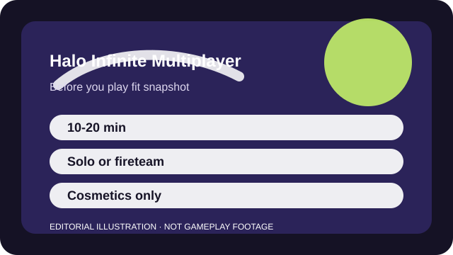

BEFORE YOU PLAY
What this page is and is not
This is a sourced editorial fit profile. It is designed to help with a yes-or-no play decision, and it does not claim a scored hands-on review.
The key fit question is whether you enjoy equal starts and map pickups more than loadout building. If you do, Halo remains extremely readable. If not, it can feel old-fashioned rather than elegant.
The first-session loop to judge is simple: Use equal starts, map pickups, and clean positioning to win fights and objective trades.
Battle passes and ranks exist, but the deeper hook is learning maps, starts, and pickup timing.

FIT SNAPSHOT
Halo Infinite Multiplayer at a glance
| Genre | Arena shooter |
|---|---|
| Platforms | PC, Xbox |
| Business model | Free-to-play arena shooter with cosmetic monetization. |
| Typical session | 10-20 minute matches that are easy to fit around other games. |
| Play style | arena objective shooter |
| Learning barrier | The combat is approachable, but weapon spawns, sightlines, and movement discipline still matter once the novelty wears off. |
| Social shape | Halo Infinite works solo or with friends; objective modes simply get better when even light communication exists. |
WHO IT FITS
Best fit, likely friction, and the social reality
players who want classic arena pacing, strong controller feel, and readable map control
players who want heavy hero abilities or a giant reward treadmill
Halo Infinite works solo or with friends; objective modes simply get better when even light communication exists.
Battle passes and ranks exist, but the deeper hook is learning maps, starts, and pickup timing.
FIRST SESSION PLAN
How to test the fit in one evening
- Play Slayer or Quick Play before ranked so the arena rhythm is clear.
- Learn two weapons you like and where they tend to appear on a favorite map.
- Treat equipment as a survival or repositioning tool before trying fancy outplays.
- Notice whether equal starts feel freeing to you or strangely restrictive.
Use the first session to answer these fit questions instead of judging rank, win rate, or store value immediately.
- Do equal starts and map pickups sound appealing instead of outdated?
- Are you willing to learn maps instead of relying on hero kits?
- Do you want arena pacing more than battle-royale sprawl?
TIME, COST, AND COMMITMENT
What you are really signing up for
| Session budget | 10-20 minute matches that are easy to fit around other games. |
|---|---|
| Social demand | Halo Infinite works solo or with friends; objective modes simply get better when even light communication exists. |
| Progression shape | Battle passes and ranks exist, but the deeper hook is learning maps, starts, and pickup timing. |
| Spending pressure | Core multiplayer access is free. Spending is mostly cosmetic. |
Matches are manageable enough that Halo works well as a secondary competitive title, not only as a main hobby.
Core multiplayer access is free. Spending is mostly cosmetic.
SOURCES AND LIMITS
What was checked, and what can change
- Playlist rotation and event structure can change what beginners see first.
- Sandbox tuning alters which weapons feel easiest to learn.
- Cosmetic events and passes change more often than the core arena fit.
This profile uses official game pages and defensible general product knowledge to frame the player fit. It does not claim live testing across every platform, accessibility need, or current event rotation.